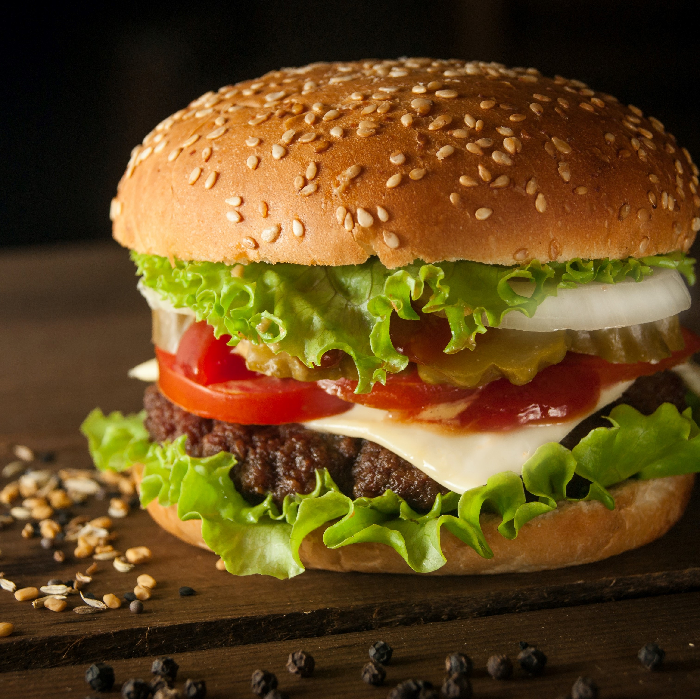
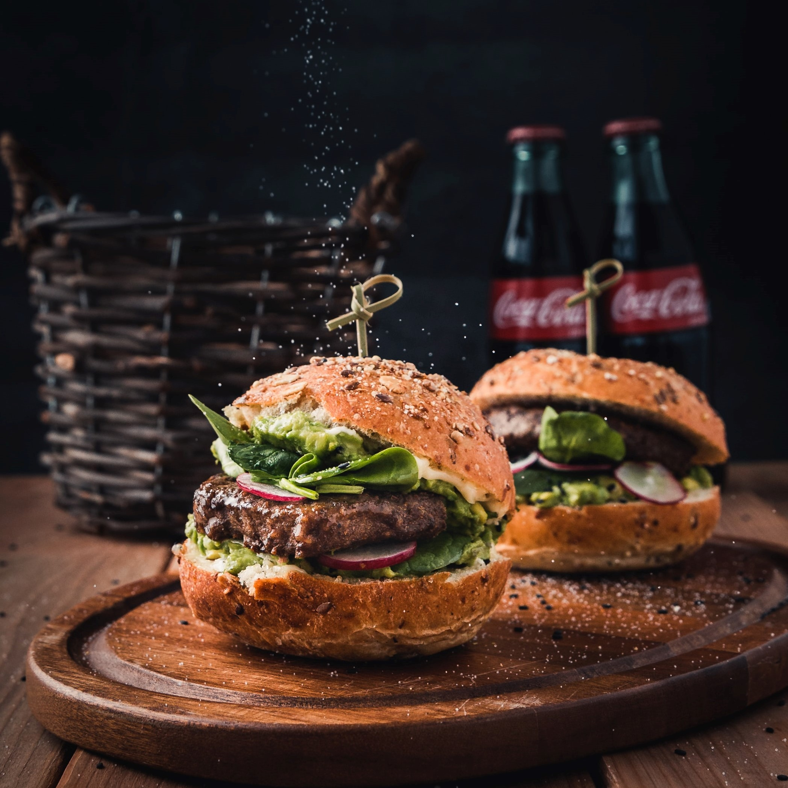
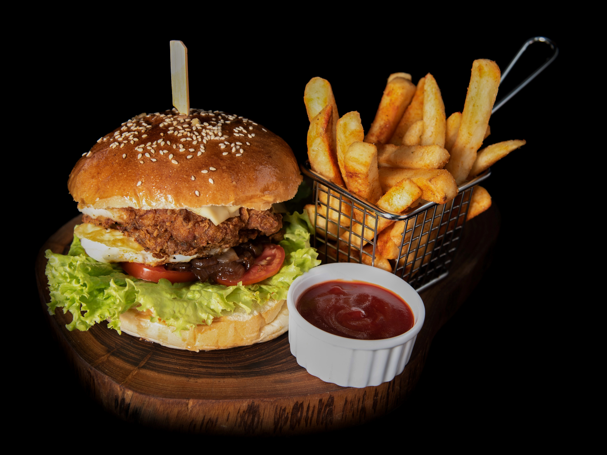

Mano is known for bastermas and soujouk in all Bourj Hammoud area and even beyond, Mano Burger (the place)) is a burger Joint that prepares the best burgers that are really good yet VERY pocket-friendly. Once there, don’t leave without trying their MANO BURGER (the burger) for it is a unique one done and sold only here.

Chicken Fried Steak with a perfectly crispy fry! Served with mashers, green beans, pepper gravy, and Texas toast.Steak with an onion ring on top, plus a foil-wrapped baked potato and Texas Toast at Alamo Springs Cafe
14 oz steak served with a piping hot baked potato, Texas toast, and a so-good-you-might-cry onion ring on top.

On the cooler days they bring the sides down and add the outdoor heater. My faves have been the calamari, the lunch lobster roll special, and the dinner portion honey-ginger salmon with spinach and roasted potatoes. Try the Fig in the City martini, yumm!